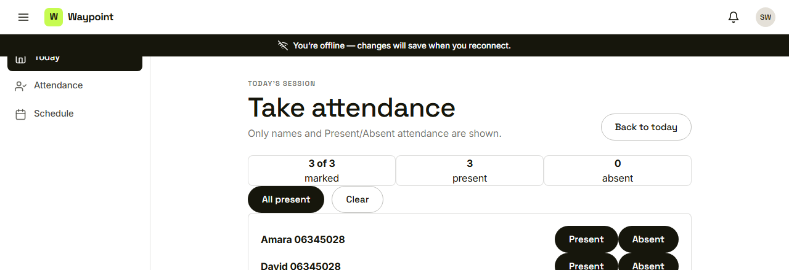
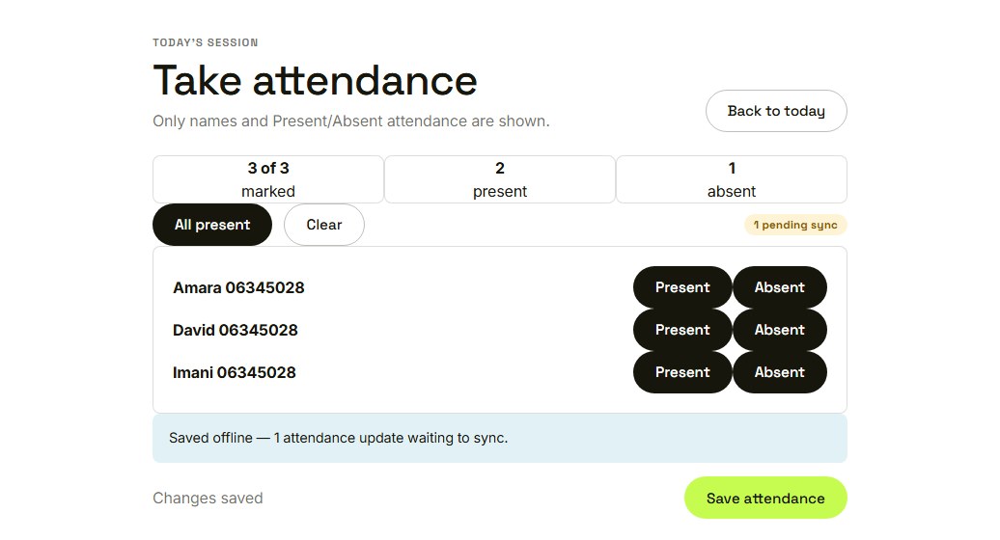
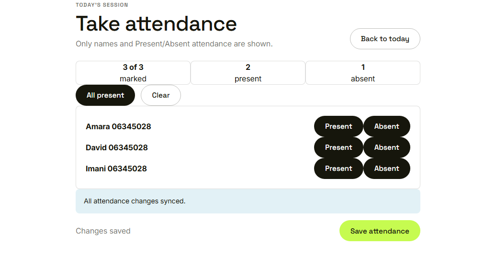
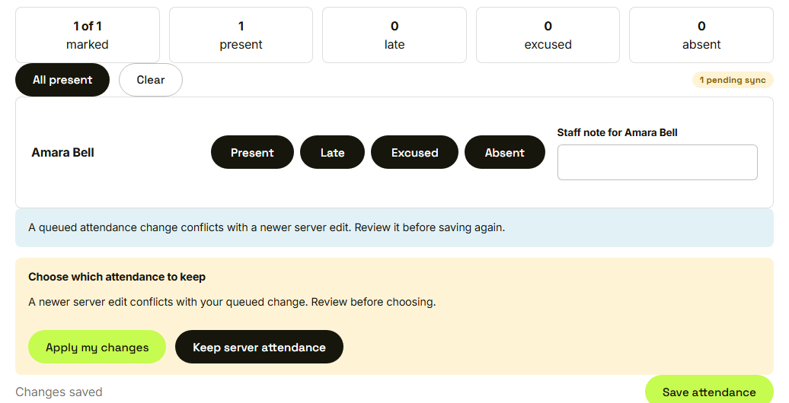

Waypoint · Video 112
Syncing attendance reliably
Marked offline, saved once, never lost
The offline bar

You're offline: changes will save when you reconnect
Saved on the device

Saved offline, waiting to sync
Synced by itself

All attendance changes synced
Never counted twice
One unique key for every saved update
A retry is applied only once
Saved marks stay private to the person who made them
A clash is shown, not hidden

Apply my changes, or keep the server attendance
Things to remember
Offline marks are kept and shown as waiting to sync
They upload by themselves when the connection returns
A unique key means a retry never counts anyone twice
A clash is shown for review, never silently overwritten